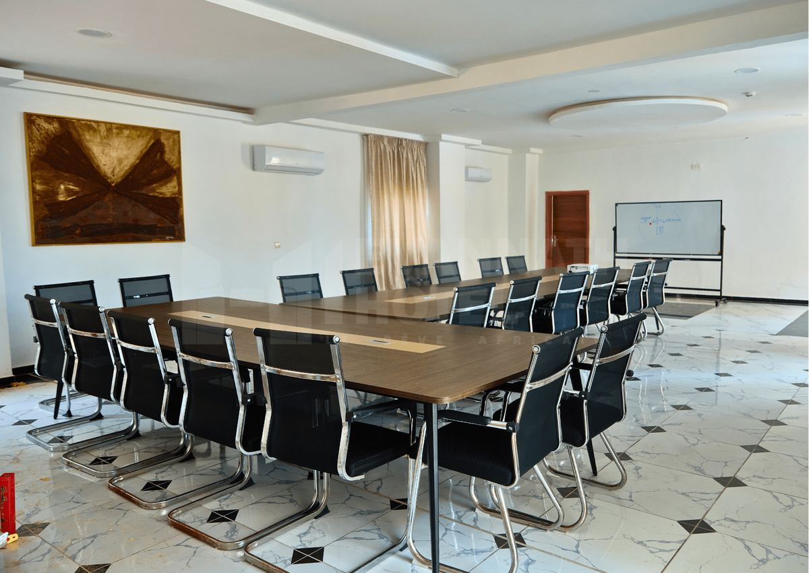
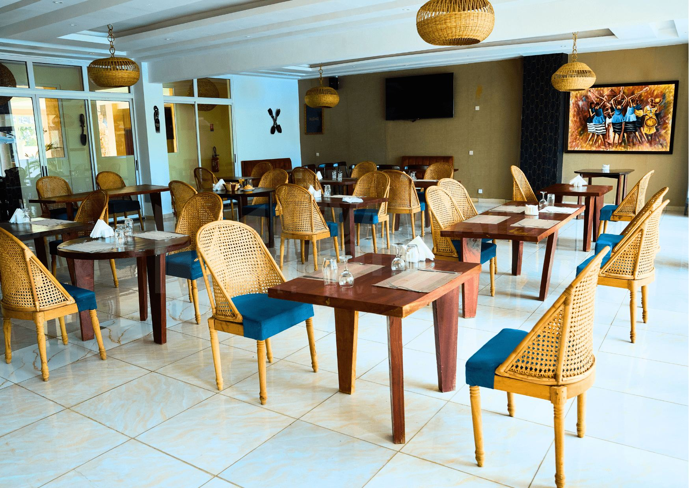

Journée d'étude
La salle pour la journée, la pause du matin, le déjeuner au restaurant et la pause de l'après-midi. Sonorisation, écran et technicien son compris.

Une salle baignée de lumière naturelle, à une heure quarante-cinq d'Abidjan, avec la lagune Aby derrière. Vos équipes s'en souviendront plus longtemps que d'une salle d'hôtel du Plateau.
Le trajet fait partie du séminaire.
Une heure quarante-cinq de route sépare Abidjan d'Assinie. C'est assez pour que le groupe décroche vraiment, et assez peu pour partir le matin et travailler à dix heures. La navette aéroport est offerte si vos participants arrivent en avion.
La salle donne sur l'extérieur par des baies vitrées : on n'y travaille pas en cave. Sonorisation, écran et technicien son sont compris, pas facturés en supplément à la fin.
Et à seize heures, quand la session est finie, il y a la piscine, le ponton et la pirogue. C'est ce qui transforme une journée d'étude en quelque chose dont on reparle.
Le mobilier se remonte selon vos besoins, la veille ou le matin même.
Chaises en rangées face à l'écran. Pour une présentation, un lancement, une assemblée.
Tables et chaises orientées vers l'avant. Pour une formation où l'on prend des notes.
Tables disposées en fer à cheval. Pour un comité de direction ou un atelier.
Debout, mange-debout et buffet. Pour un lancement produit ou une réception.
Tables rondes de huit. Pour un dîner de gala ou un anniversaire.
Capacités indicatives — la réception confirme selon la configuration retenue et le nombre exact de participants.
Chaque formule se chiffre selon l'effectif, la durée et la restauration retenue. Devis sous 24 h.
La salle pour la journée, la pause du matin, le déjeuner au restaurant et la pause de l'après-midi. Sonorisation, écran et technicien son compris.
La journée d'étude, plus les chambres et les dîners. Nos sept catégories accueillent de deux à six personnes chacune, et la navette aéroport est offerte pour tout le groupe.
Le travail le matin, la lagune l'après-midi : balade en pirogue, jet ski, ou simplement la piscine. C'est ce qui distingue Assinie d'une salle de réunion à Abidjan.
Cocktail, dîner de gala, lancement de produit, anniversaire d'entreprise. Salle privatisée, buffet complet, sonorisation et technicien son inclus dès dix personnes.

Notre formule la plus simple à organiser : vous donnez une date et un nombre, nous faisons le reste.